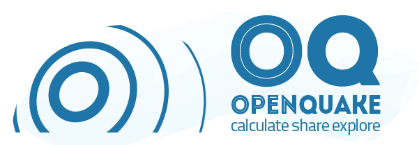
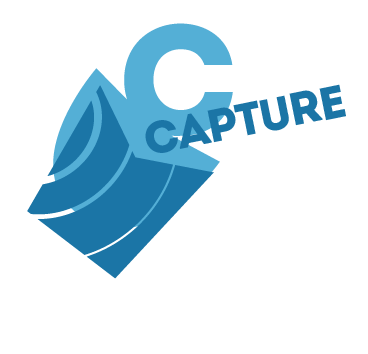
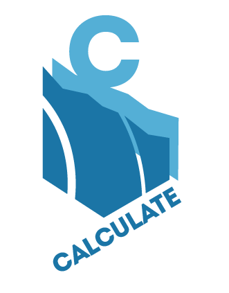
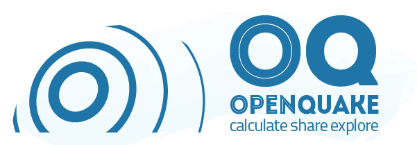

{% block oq_context_ribbon %}
{% endblock oq_context_ribbon %}
{% block oq_body_heading %}
{% endblock oq_body_heading %}
{% trans "OpenQuake Tools" %}
{% endblock oq_body_heading %}
{% block oq_body_content %}
The OpenQuake Platform Tools are ...
In additon there are offline QGIS tools...
Some description of the faulted Earth tool...
Some description...
Powered by the OpenQuake Engine, users are be able to carry out seismic hazard, physical and integrated risk assessment in a variety of ways.
Consequences Database ...
Vulnerability Database ...
oq- for desktop
IDCT 4 Win, SIDD
TAXT
oq-platform
Link to Google Play for IDCT Android
Links/Instructions for installing QGIS plugins: BREC, SVIR, Exposure...

{% endblock oq_body_content %}
SVIR
SVIR ViewerIn additon there are offline QGIS tools...
Faulted Earth upload tool
Faulted EarthSome description of the faulted Earth tool...
Exposure Export
Exposure ExportSome description...
Calculate
CalculatePowered by the OpenQuake Engine, users are be able to carry out seismic hazard, physical and integrated risk assessment in a variety of ways.
Consequences
ConsequencesConsequences Database ...
Vulnerability
Vulnerability DatabaseVulnerability Database ...
Download software tools
oq-engineoq- for desktop
IDCT 4 Win, SIDD
TAXT
oq-platform
Link to Google Play for IDCT Android
Links/Instructions for installing QGIS plugins: BREC, SVIR, Exposure...

{% block oq_body_sidebar %}
{% endblock oq_body_sidebar %}